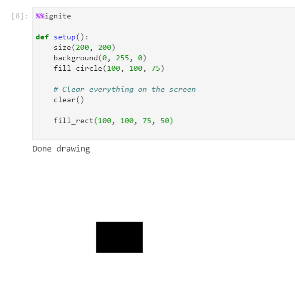

Color
Below is a list of all of the information about colors within spark.
All of the examples below assume you have the boilerplate from the notebook setup in your code
Creating a background
There are two ways to use background:
| Method | Description | Syntax |
|---|---|---|
| String | Give the name i.e. "green" | background("Green") |
| 3 ints | Give the r,g,b vaule i.e. 0,255,0 | background(0, 255, 0) |
String background
1 | |
Parameters
- color: (str) The name of the color to use
Example(s):
Creating a green background
1 2 3 4 5 6 7 | |
Results in:

Integer background
1 | |
Parameters
- r: (int) The red value (between 0-255)
- g: (int) The green value (between 0-255)
- b: (int) The blue value (between 0-255)
Example(s):
Creating a green background
1 2 3 4 5 6 7 | |
Results in:

Clearing the screen
To clear the screen, there are two options:
| Method | Description |
|---|---|
| clear() | Clear the screen to default background color (light or dark depending on user settings) |
| background() | Clear the screen with a specific color |
Notes
- For both make sure to put it at the top or bottom of your draw() function if you are using one
- For the r, g, b values they go from 0-255. So for all green you would use 0, 255, 0
clear()
clear explicitly just clears the screen to the default background color
1 | |
Example(s):
Drawing a green background and a circle, then clearing the screen and drawing just a rectangle
1 2 3 4 5 6 7 8 9 10 11 12 13 14 | |
Results in:

Changing the color of shapes
There are two available options to change the color of shapes you draw:
| Method | Description | Syntax |
|---|---|---|
| String | Give the name i.e. "green" | fill_style("Green") |
| 3 ints | Give the r,g,b vaule i.e. 0,255,0 | fill_style(0, 255, 0) |
Notes
- Keep in mind you need to select the color then draw the shape. Like dipping a paintbrush before drawing.
- For the r, g, b values they go from 0-255. So for all green you would use 0, 255, 0
String version
1 | |
Parameters
- color: (str) The name of a color (full list found here) i.e. "blue"
Example(s):
Drawing a red, a green, and a blue circle at different points on the canvas
1 2 3 4 5 6 7 8 9 10 11 12 13 14 15 16 | |
Results in:

Integer version
1 | |
Parameters
- r: (int) The red value (between 0-255)
- g: (int) The green value (between 0-255)
- b: (int) The blue value (between 0-255)
Example(s):
Drawing a red, a green, and a blue circle at different points on the canvas
1 2 3 4 5 6 7 8 9 10 11 12 13 14 15 16 | |
Results in: